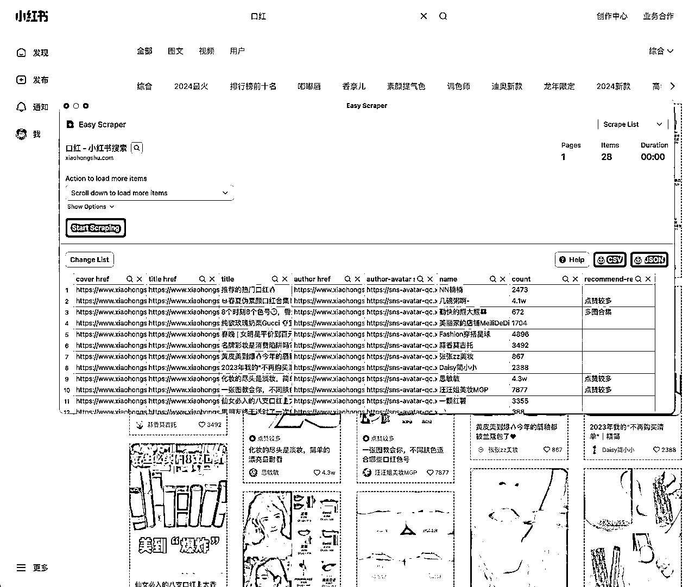
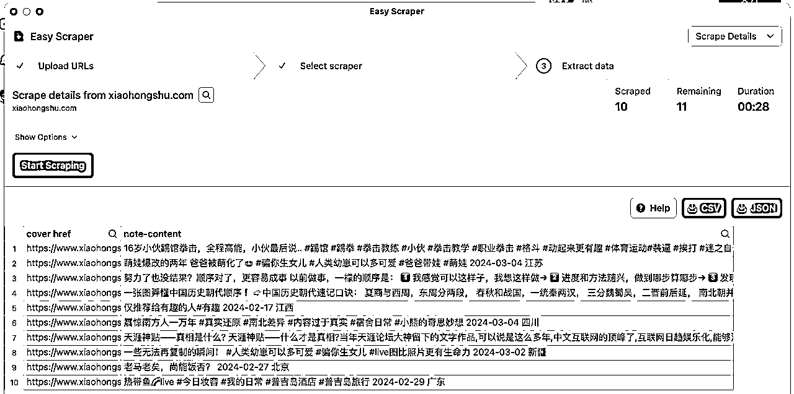
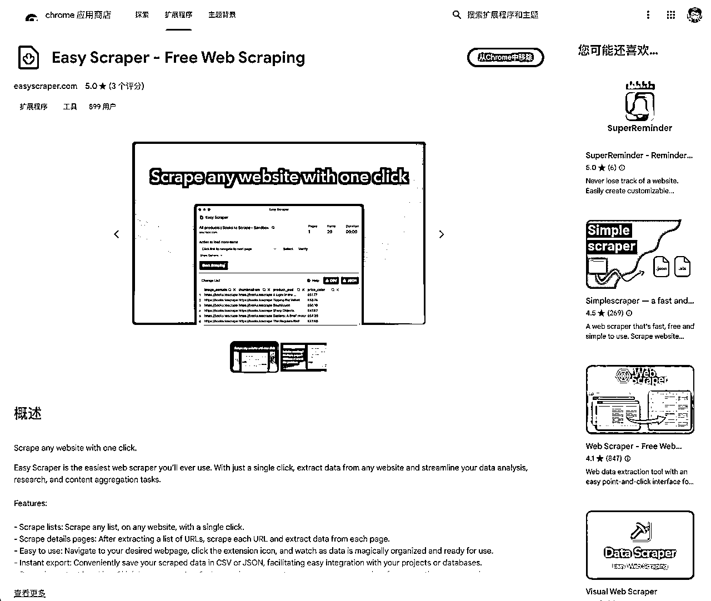
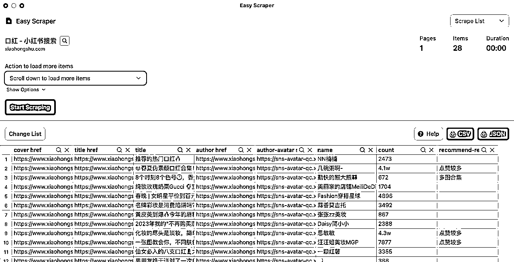
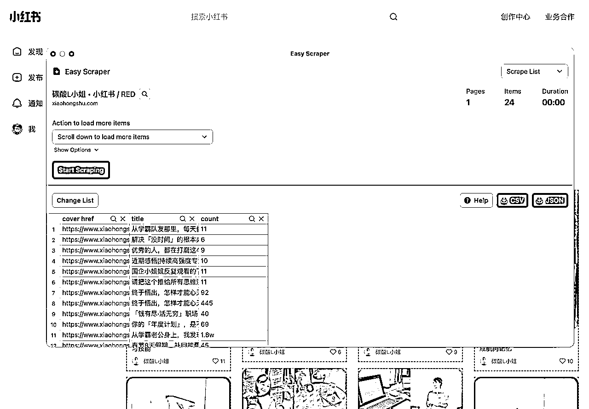
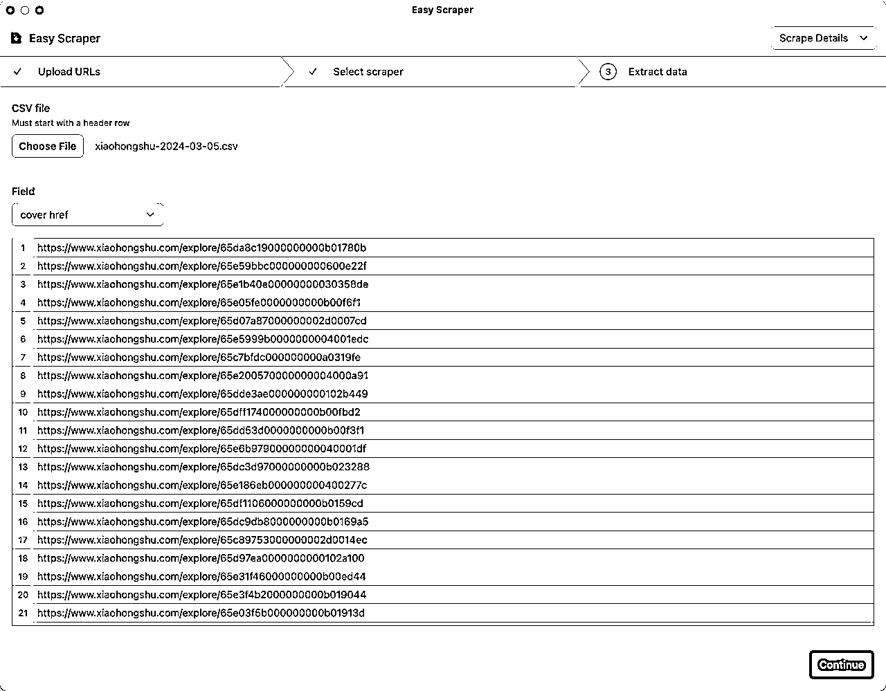
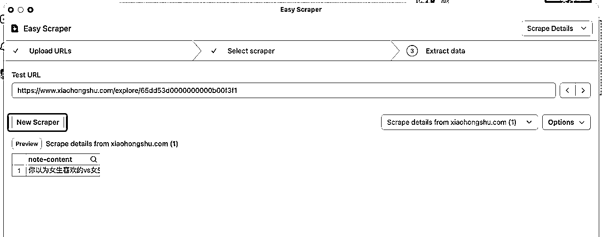
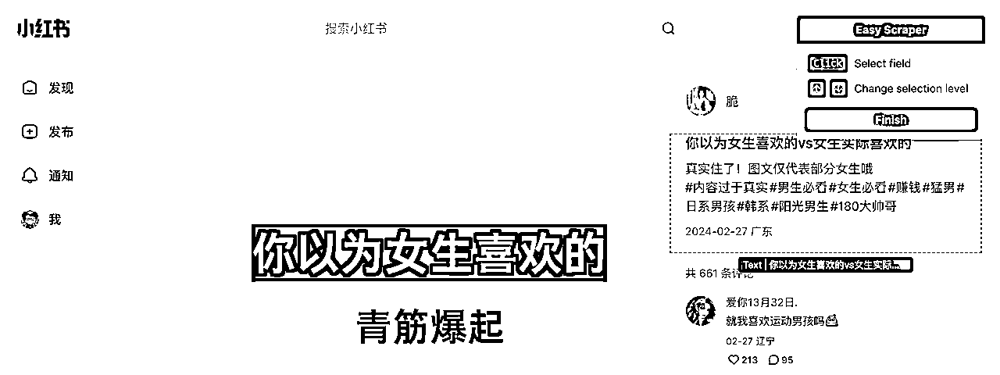
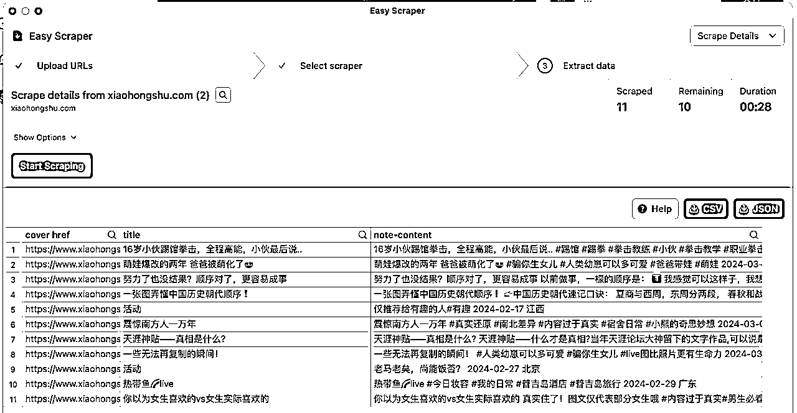

来源：https://vfu5gh579k.feishu.cn/docx/G10CdKxKxoPrtAx7m3vcvzSanTd
大家好，我是 姬小光，今天给大家介绍一个零代码 1 秒导出小红书帖子标题和详情的工具：Easy Scraper。它是一个 Chrome 扩展，只需点击一下即可抓取任何网站的内容。它可以让完全没有爬虫基础的使用者，一秒钟获取小红书帖子数据。先来看看效果吧：


Easy Scraper 的主要功能包括抓取列表、抓取详细页面、易于使用、即时导出、动态内容处理和隐私聚焦。用户只需导航到所需的网页，点击扩展图标，即可看到数据被神奇地组织起来并准备好使用。它可以巧妙管理JavaScript渲染的内容，确保从最复杂的站点捕获数据。同时，Easy Scraper在浏览器本地操作，确保数据的私密性和安全性，不通过网络发送。
它支持导出CSV或JSON格式的数据，导出的内容可以直接丢到ChatGPT里面进行简单分析，也可以作为GPTs的知识库。这个工具目前完全免费，原因是开发者将在整个三月份参加沉默冥想闭关，没有时间添加付费计划。
下面详细讲解使用方法。
那么如何使用Easy Scraper呢？首先，从 Chrome Web Store 或者 官网 一键安装扩展。

然后，导航至希望抓取数据的网站。点击 Chrome 右上角扩展图标激活抓取器，即可 1 秒导出帖子基础数据：
如果需要，可以自定义抓取，调整列表和抓取速度。可以选择滚动下来抓取，页而已自定义等待时间。最后，选择所需格式导出数据即完成。

再来试试抓取某个博主的帖子标题：

可以看到抓取结果包含了标题，帖子链接，还有点赞数。抓取后的标题可用于 GPT 辅助生成类似标题，或者用于简单的分析。
首先，第一步我们导出了一个列表数据的 CSV，下面在抓取页面的右上角，选择 Scrape Details，然后将刚刚导出的列表数据再传回来：

这里会默认识别一个可能是详情链接的字段，如果确认无误可以点击「Continue」，否则可以下拉框手动选择其他字段作为详情链接。
接下来设置详情页抓取的元素，点击「New Scraper」后，会在详情页出现一个选择器，鼠标悬停选中你想抓取的区域即可：

选中后，点击「Finish」完成选择：

继续点击「Continue」，接下来就到了爬取这一步了。点击「Start Scraping」开始爬取详情页内容：

我们可以看到，帖子的标题和详情都已经爬取到了。再次导出 CSV 即可。
上面的两种方法是通用技能，可以爬取各种人眼能见到的网页内容，只需要变换选择器，或者手动调整爬取的列表即可。具体大家可以自己研究。它最大的特点就是简单，你不用学什么爬虫技术，一行代码也不用写，甚至都不用装什么软件，点一点就能拿到想要的数据，还有比这更香的吗？